This exhibition examines stories of forced migration in the history of Queen’s University and within the Queen’s community, reflecting the diverse trajectories of those who sought refuge. Featuring books, archival materials, and objects from W.D. Jordan Rare Books and Special Collections, Queen's University Library, Queen's University Archives, Agnes Etherington Art Centre, and the Museum of Healthcare at Kingston. Prepared by undergraduate students, an archivist, a historian, and a librarian.
View ExhibitQueen’s Refuge
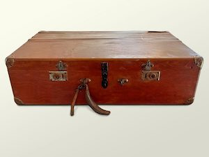The Queen’s Museum of Near Eastern Archaeology
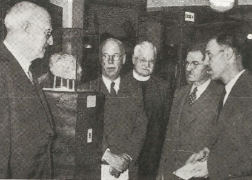On October 26th, 1954, a Museum of Near Eastern Archaeology opened in the Old Arts Building (modern Theological Hall), the home of Queen’s Theological College. This project reveals how the Museum came into being, a gallery of select items once included in the museum, and the context surrounding the sudden and tragic loss of such a culturally and educationally significant collection.
View ExhibitStauffer@25
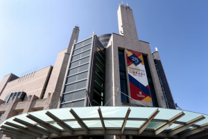Stauffer Library is where, for many, the magic happens. Students, staff, and faculty, along with members of the community, use the building’s many spaces for research and study, to work together on projects and papers, and to gather in the shared experience of learning.
View ExhibitImagining our Digital Future
This virtual exhibit complements digital planning initiatives under way at Queen’s and in the Kingston community. For decades, we have been leveraging technologies to advance learning and research. Here we highlight just some of our interesting initiatives in the digital realm.
View ExhibitBooks@Queen’s
An exploration of the amazing collection at Queen’s, and the faculty, staff and students that love these resources. A project of MUSC156 (Introduction to Digital Audio Recording, Editing and Mixing), in collaboration with CFRC Radio and Queen’s University Library. Podcast production overseen by MUSC156 instructor Matt Rogalsky.
View ExhibitThe Diniacopoulos Collection
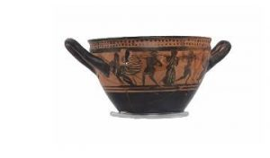An exploration of the amazing collection at Queen’s, and the faculty, staff and students that love these resources. A project of MUSC156 (Introduction to Digital Audio Recording, Editing and Mixing), in collaboration with CFRC Radio and Queen’s University Library. Podcast production overseen by MUSC156 instructor Matt Rogalsky.
View Exhibit175 years of Queen’s University Library
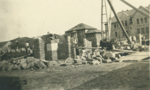This timeline exhibit outlines a history of the library, and is filled with stories exemplifying the strengths the present day library is still known for: strong research collections, dedicated staff, and superb facilities.
View ExhibitIntroducing the Schulich-Woolf Collection
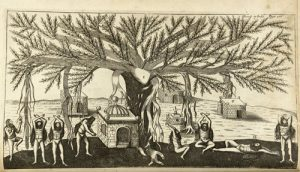Our first exhibition of the Schulich-Woolf collection is an introduction to the wealth and breadth of materials available. The items on display are arranged topically by Ancient History and Antiquities, English History and Chronicles, Europe and the Middle East, Travel and Exploration,and English Topography and Antiquities.
View ExhibitIndigenous Art in Stauffer Library
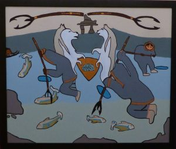Indigenous art and language are featured in 12 new study spaces on the Queen’s campus. Twelve new study rooms at Queen’s University’s Stauffer Library are being given Indigenous names to increase the visibility of the Indigenous community.
View ExhibitPrison Sentences
Indigenous art and language are featured in 12 new study spaces on the Queen’s campus. Twelve new study rooms at Queen’s University’s Stauffer Library are being given Indigenous names to increase the visibility of the Indigenous community.
View ExhibitThe Young Ladies’ Journal
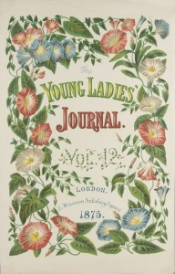The Young Ladies’ Journal (1864-1920) is an illustrated periodical that was marketed specifically to a young, female, middle-class audience. Each month, the YLJ published several fashion supplements that were distributed with its regular magazine issues. These supplements feature illustrated fashion spreads, needlework design and crafting templates, and dress patterns that could be cut out and traced onto fabric. When viewed together, these supplements provide a powerful visual demonstration of the relationship between fashion and consumer culture.
View Exhibit125 Years of Canadian Literature at Queen’s University
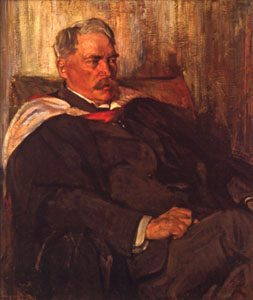The year 2014 marked the 125th anniversary of the appointment of James Cappon to the first Chair in English at Queen’s University. To celebrate this milestone, the Department of English, the W.D.Jordan Special Collections and Music Library and Queen’s University Archives offer a retrospective on the complex intersections of scholarship, creativity, and stewardship that have defined the role of Queen’s and its faculty in the history of Canadian literature.
View ExhibitStereoscopic Views
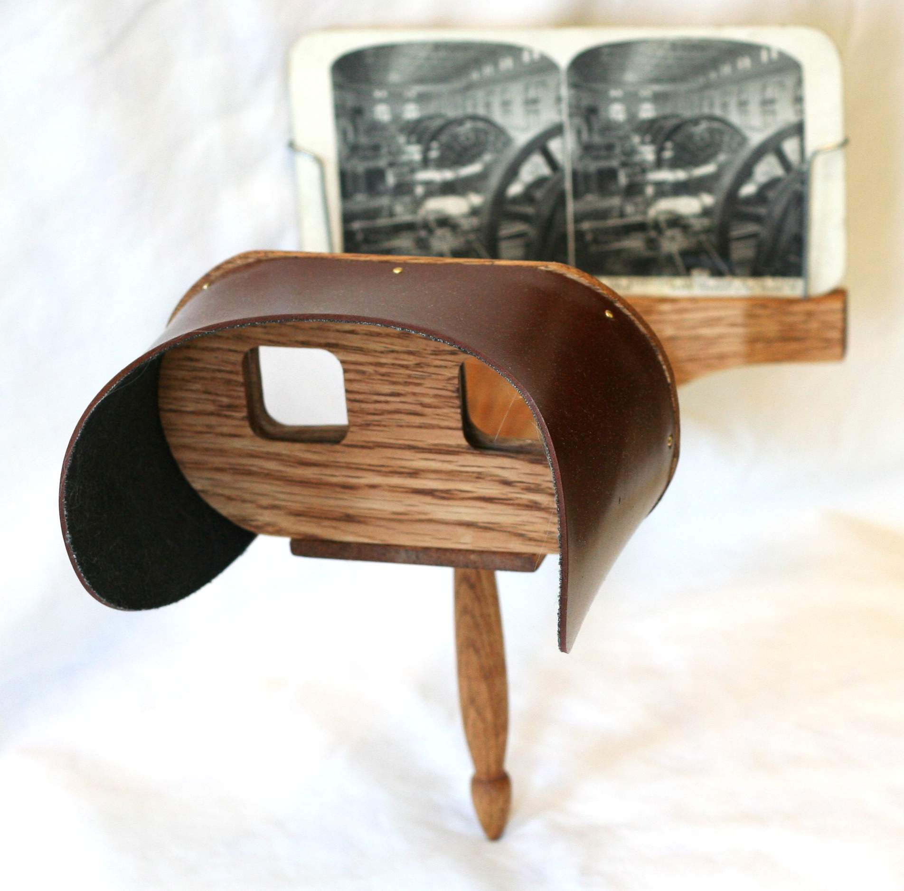Stereoscopic views, or stereo cards, consist of two photographs, taken from slightly different angles and mounted on card, that would appear three-dimensional when viewed through a stereoscope. Wildly popular in the mid 19th and early 20th centuries, they were an early mass medium that served a variety of social functions — ideological, aesthetic, or even spiritual — that have, thus far, received little scholarly attention.
View ExhibitA Pocket Cathedral
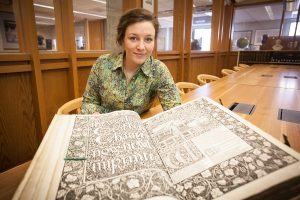The Kelmscott Chaucer was the last and greatest work to arise from the partnership between the British Arts and Crafts design reformer William Morris and the late Pre-Raphaelite artist Sir Edward Burne-Jones. Originally owned by Lawrence of Arabia, the tooled leather-bound edition in the Queen’s collection is one of only 48 of its kind. “A Pocket Cathedral” presents this remarkable work of art among contemporary Private Press books whose intricate design, hand craftsmanship and social message share the same Arts and Crafts sensibility.
View Exhibit